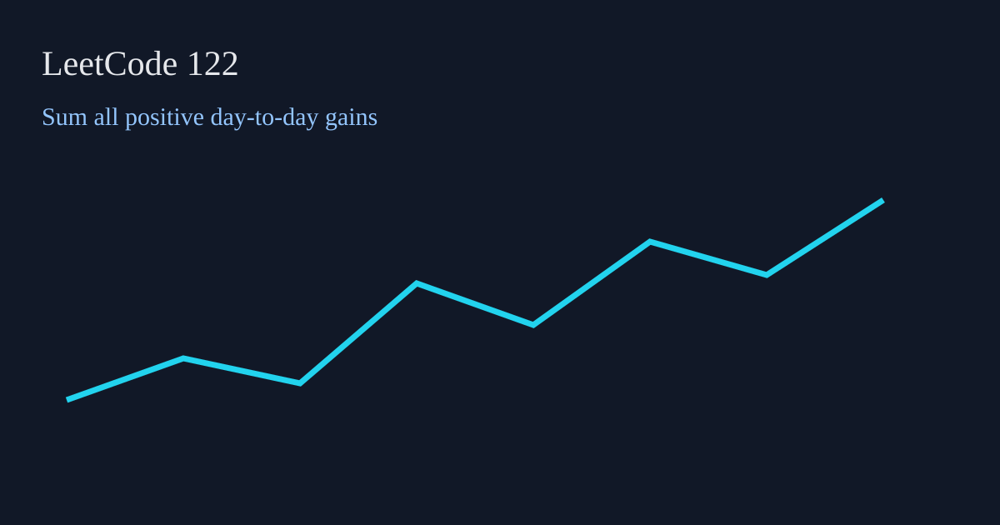

LeetCode 122: Best Time to Buy and Sell Stock II (Greedy Sum of Rising Segments)
LeetCode 122ArrayGreedyToday we solve LeetCode 122 - Best Time to Buy and Sell Stock II.
Source: https://leetcode.com/problems/best-time-to-buy-and-sell-stock-ii/

English
Problem Summary
You may buy and sell multiple times, but you can hold at most one stock at any moment. Maximize total profit.
Key Insight
Any increasing segment can be decomposed into day-by-day gains. So summing every positive prices[i]-prices[i-1] is optimal.
Complexity Analysis
Time: O(n).
Space: O(1).
Reference Implementations (Java / Go / C++ / Python / JavaScript)
class Solution { public int maxProfit(int[] prices) { int ans = 0; for (int i = 1; i < prices.length; i++) if (prices[i] > prices[i - 1]) ans += prices[i] - prices[i - 1]; return ans; } }func maxProfit(prices []int) int { ans := 0; for i := 1; i < len(prices); i++ { if prices[i] > prices[i-1] { ans += prices[i] - prices[i-1] } }; return ans }class Solution { public: int maxProfit(vector& prices) { int ans = 0; for (int i = 1; i < (int)prices.size(); i++) if (prices[i] > prices[i-1]) ans += prices[i] - prices[i-1]; return ans; } }; class Solution:
def maxProfit(self, prices: list[int]) -> int:
ans = 0
for i in range(1, len(prices)):
if prices[i] > prices[i - 1]:
ans += prices[i] - prices[i - 1]
return ansvar maxProfit = function(prices) { let ans = 0; for (let i = 1; i < prices.length; i++) { if (prices[i] > prices[i-1]) ans += prices[i] - prices[i-1]; } return ans; };中文
题目概述
可以进行多次交易，但任意时刻最多持有一股，求最大总利润。
核心思路
只要今天比昨天贵，就把这段涨幅赚到手。把所有正差值累加，等价于每段上升区间的“低买高卖”。
复杂度分析
时间复杂度：O(n)。
空间复杂度：O(1)。
多语言参考实现（Java / Go / C++ / Python / JavaScript）
class Solution { public int maxProfit(int[] prices) { int ans = 0; for (int i = 1; i < prices.length; i++) if (prices[i] > prices[i - 1]) ans += prices[i] - prices[i - 1]; return ans; } }func maxProfit(prices []int) int { ans := 0; for i := 1; i < len(prices); i++ { if prices[i] > prices[i-1] { ans += prices[i] - prices[i-1] } }; return ans }class Solution { public: int maxProfit(vector& prices) { int ans = 0; for (int i = 1; i < (int)prices.size(); i++) if (prices[i] > prices[i-1]) ans += prices[i] - prices[i-1]; return ans; } }; class Solution:
def maxProfit(self, prices: list[int]) -> int:
ans = 0
for i in range(1, len(prices)):
if prices[i] > prices[i - 1]:
ans += prices[i] - prices[i - 1]
return ansvar maxProfit = function(prices) { let ans = 0; for (let i = 1; i < prices.length; i++) { if (prices[i] > prices[i-1]) ans += prices[i] - prices[i-1]; } return ans; };
Comments